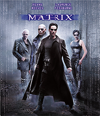

Matrix (č:3001)
Obsah:

Příběh nadaného počítačového experta Thomase Andersona přezdívaného Neo, který se jednoho dne dozví, že žije v simulaci vytvořené stroji. Dokáže se strojům vzepřít a osvobodit ostatní lidi? Velmi napínavý a poutavý příběh ze světa ovládaného stroji.
Režie a scénář:
Lilly a Lana Wachowski
Kamera:
Bill Pope
Hrají:
Keanu Reeves, Laurence Fishburne, Carrie-Anne Moss, Hugo Weaving a další